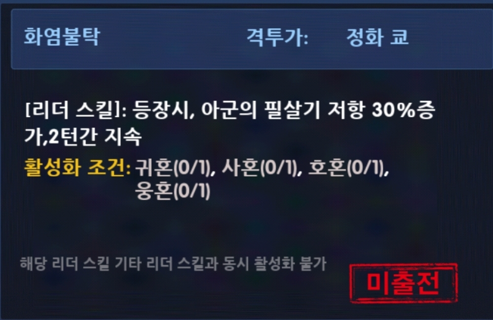
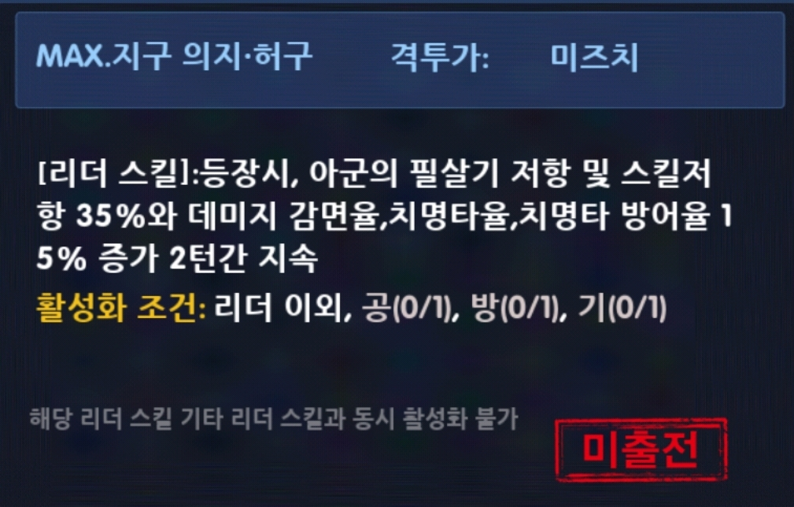

- 덱의 뼈대 역할을 수행하는 팀장(리더) 캐릭을 지칭하는 단어이며, 1년에 한번씩 n주년에 맞춰 출시하는 캐릭입니다. (매년 중섭 7월 최초 공개, 한섭의 경우 매년 11월에 출시) 그렇기에 덱에 없어선 안될 필수적인 존재이며 덱의 유지력에 기여하는 데 큰 역할을 하는 캐릭입니다. 최초의 코어 캐릭 '폭주 이오리'를 시작으로 현재는 사이키 변신 후(누드키)가 코어를 맡고 있습니다. 코어 캐릭은 고유의 '리더 스킬'을 보유하고 있으며 덱 조건을 충족 시 발동됩니다. 간단한 예시로 정화 쿄와 미즈치를 예시로 들어보겠습니다.
(2) 욕파
- 상대 덱 전체의 공격력을 저하 시키는 패시브를 뜻합니다. 욕파라는 이름은 최초의 욕파 캐릭 마이의 4성 패시브 '욕파불능'에서 유래하여 지어진 이름입니다. 욕파도 코어 못지 않게 덱을 구성하는 데 있어서 빠져선 안될 필수적인 요소이며 오히려 코어보다도 유무체감이 심한게 욕파라고 생각합니다. 코어는 제한된 턴 동안만 리더 스킬을 발동시키지만 욕파는 경기가 끝날 때까지 지속되기 때문입니다.
욕파도 리더스킬과 마찬가지로 마이를 시작으로 꾸준히 상향된 버전으로 업그레이드 되고 있습니다. 그리고 현재 기준 최상위 욕파 움각크와 움각야가 출시된 상태입니다. 여기서 잠깐 14자질 이하 욕파들을 배제한 15자질 이후 욕파캐릭들을 잠깐 살펴보겠습니다.
<15자질 기준 세대별 욕파>
1세대 : 애쉬 크림존, 마가키, 엘리자베트, 텅푸루
- 적 전체의 공격력 10% 저하 -> 1렙기준
2세대 : 로버트XI, 랄프XIII, 바이스XIII, 매츄어XIII
- 적 전체의 공격력 15% 저하 -> 1렙기준
3세대 : 쿨라XIV, 최번개XIV, 테리XIII
- 적 전체의 공격력 15% 저하 + 뎀감율 10% 감소(2턴) -> 1렙기준
4세대(현) : 각성 크리스 02UM, 각성 야시로 02UM
- 적 전체의 공격력 20% 저하 + 뎀감율 10% 감소(3턴) + 부활 및 원호 출전 격투가에게도 전부 적용 -> 1렙기준
복귀&신섭 유저 분들께서는 해당 세대별 욕파를 덱을 구성할때 참고하시면 될 것 같습니다.
그럼 욕파와 코어를 바탕으로 덱을 짜는 기본 구성에 대해서 말씀드려보겠습니다.